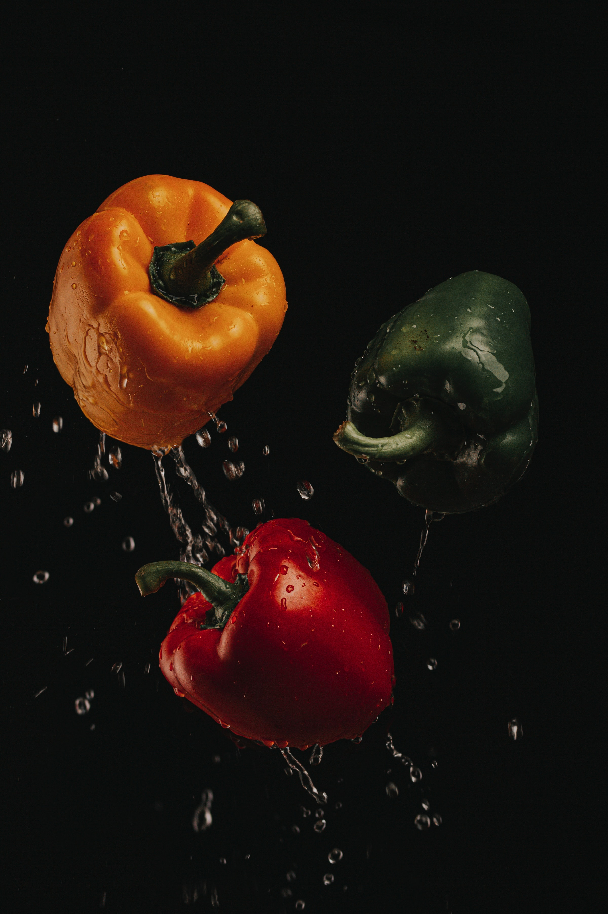

ABOUT US
Nutrition
The nutritional value of food is largely a function of its vitamin and mineral content. In this regard, organically grown food is dramatically superior in mineral content to that grown by modern conventional methods.
Because it fosters the life of the soil organic farming reaps the benefits soil life offers in greatly facilitated plant access to soil nutrients.
Healthy plants mean healthy people, and such better nourished plants provide better nourishment to people and animals alike.
Poison-free
A major benefit to consumers of organic food is that it is free of contamination with health harming chemicals such as pesticides, fungicides and herbicides.
years. advantages and disadvantages organic farming
Food Tastes Better Animals and people have the sense of taste to allow them to discern the quality of the food they ingest.
It comes as no surprise, therefore, that organically grown food tastes better than that conventionally grown. The tastiness of fruit and vegetables is directly related to its sugar content, which in turn is a function of the quality of nutrition that the plant itself has enjoyed.
This quality of fruit and vegetable can be empirically measured by subjecting its juice to Brix analysis, which is a measure of its specific gravity (density). The Brix score is widely used in testing fruit and vegetables for their quality prior to export.
Food Keeps Longer
Organically grown plants are nourished naturally, rendering the structural and metabolic integrity of their cellular structure superior to those conventionally grown. As a result, organically grown foods can be stored longer and do not show the latter’s susceptibility to rapid mold and rotting.
GROWER BENEFITS
A healthy plant grown organically in properly balanced soil resists most diseases and insect pests.
This was proven by US doctor and soil nutrition pioneer Dr Northern who conducted many experiments to test the hypothesis during the 1930’s.
Disease and Pest Resistance
For instance, in an orange grove infested with scale, he restored the mineral balance to part of the soil and the trees growing in that part became clean while the rest remained diseased.
By the same means he grew healthy rosebushes between rows that were riddled by insects, and tomato and cucumber plants, both healthy and diseased, where the vines intertwined. Northern observed that the bugs ate up the diseased and refused to touch the healthy plants!
Weed Competitiveness
Weeds are nature’s band-aids, placed by the wisdom of creation to heal and restore damaged soils. When farmers husband the life of the soil, as they do in organic agriculture, the improved conditions dissuade many weeds and favor their crops. The crops, being healthier, are also better able to compete with those weeds that are present.
Lower Input Costs
By definition, organic farming does not incur the use of expensive agrichemicals – they are not permitted! The greater resistance of their crops to pests and the diseases save farmers significantly in expensive insecticides, fungicides and other pesticides.
Fertilizers are either created in situ by green manuring and leguminous crop rotation or on-farm via composting and worm farming. Biodynamic farmers use a low cost microbial solution sprayed onto their crops.
The creation of living, fertile soil conditions through early corrective soil re-mineralization and strategic Keyline chisel ploughing are significant establishment costs that, however, reap ongoing benefits to production at minimal maintenance.
Drought Resistance
Organically grown plants are more drought tolerant. This was dramatically illustrated to me several years ago when I was fortunate to attend a workshop with Australian organic gardening guru Peter Bennett. A slide he showed us has stuck in my mind ever since: it was a field of wheat, organically grown on re-mineralized soil.
Bisecting the ripening green crop was a wide yellowed strip that had already finished growing and hayed off. He explained that the strip had been nourished using agrichemical fertilizer early in the growing period.
Because chemical fertilizer is soluble, plants are forced to imbibe it every time they are thirsty for water. They can and do enjoy good growth as long as water is readily available. As soon as water becomes limited, however, the soluble nutrient salts in the cells of chemically fed plants are unable to osmotically draw sufficient water to maintain safe dilution. They soon reach toxic concentrations, and the plant stops growing, hays off and dies earlier than it otherwise would have.
Organic farming is a method of crop and livestock production that involves much more than choosing not to use pesticides, fertilizers, genetically modified organisms, antibiotics and growth hormones.
Organic production is a holistic system designed to optimize the productivity and fitness of diverse communities within the agro-ecosystem, including soil organisms, plants, livestock and people. The principal goal of organic production is to develop enterprises that are sustainable and harmonious with the environment.
